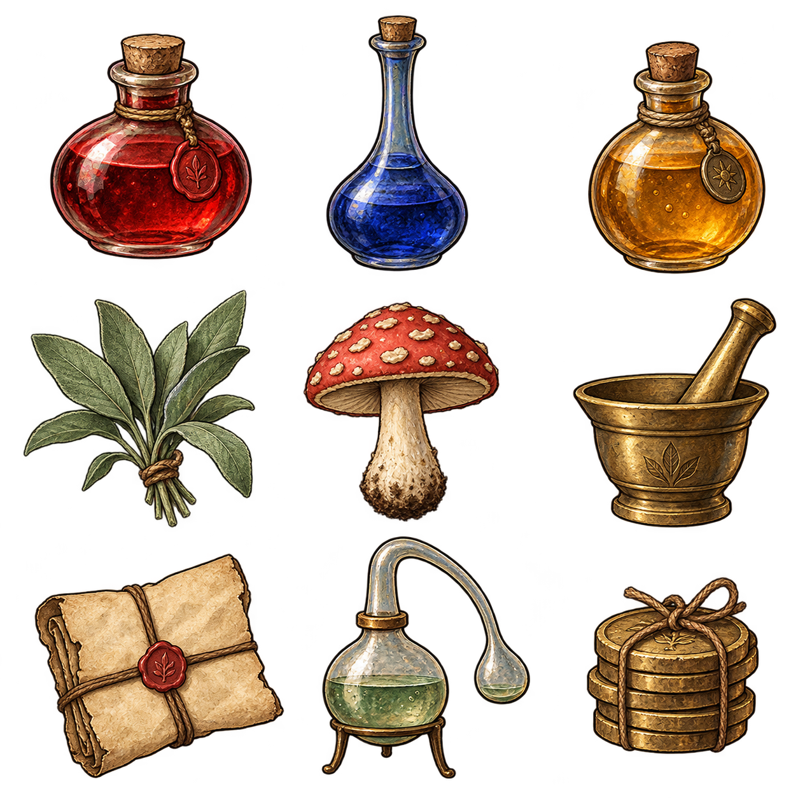

FORMULA STUDY / 01
Alchemy Map
Trace the restorative path
Choose a route mark. The ring previews its effect and ingredient cost.
DANGER CLOUDSWIRL
DESTINATIONHeal · restorative
SAMPLE COST1 Water Base · 1 Mint
Heal path preview · sample produces one Heal Draught.
INDEXED FORMULAE / 03 ENTRIES
Recipe Ledger
RECIPEEFFECT / BREWSMARK

ENTRY Heal Draught · STOCK 2SHOP DESK / CUSTOMER 014
Trade Counter
CUSTOMER REQUEST
Mira
“I need one restorative draught for the road.”
M
ONE BOTTLE · RESTORATIVESelected bottle
HEALING / RESTORATIVE
Heal Draught
Stock 2 · Offer 9 coins
OFFER+ 9 COINS
Mira is waiting. No stock or coin has changed.